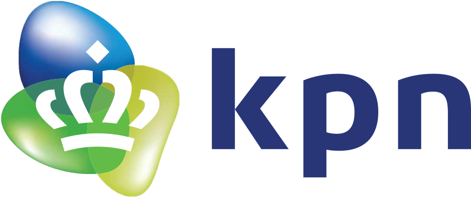

KPN
KPN은 네덜란드의 통신 기업이다. 정부가 운영하던 우편·전신·전화 사업에서 출발해 1989년 민간 기업 형태로 개편되었으며, 정식 명칭은 Koninklijke KPN N.V.이다.
최종 업데이트

KPN는 어떤 브랜드인가
KPN은 네덜란드의 통신 기업이며, 정부가 운영하던 우편·전신·전화 서비스에서 비롯되었다. 1893년 우편과 전신·전화 서비스가 하나로 합쳐져 PTT가 되었고, 1989년 1월 1일 Koninklijke PTT Nederland라는 민간 기업으로 개편되어 KPN이라 불리게 되었다.
네덜란드 정부는 1994년부터 단계적으로 민영화를 진행했다. 2005년 정부 지분은 6.4%로 줄었고, 2006년 golden share 거부권을 내려놓으며 절차가 끝났다.
2007년에는 Getronics N.V.를 인수해 규모를 거의 두 배로 키웠다. 2013년 América Móvil이 인수를 제안했으나 성사되지 않았고, 2020년에는 EQT AB가 인수를 제안했다.
KPN는 어떻게 시작되고 성장했나
현재의 KPN은 1752년 Statenpost라는 우편 서비스로 공식 출범한 조직에 뿌리를 둔다. 1799년 네덜란드 우편이 단일 국가 체계로 개편되었고, 1807년 재무부 관할에 놓였다.
1893년 우편과 전신·전화가 합쳐져 Staatsbedrijf der Posterijen, Telegrafie en Telefonie가 되었고, 줄여서 PTT라 불렀다. 1989년 1월 1일 PTT는 Koninklijke PTT Nederland로 개편되어 KPN 또는 PTT Nederland로 불렸으며, 정부가 전액 소유하되 경영하지는 않았다.
우편은 PTT Post, 통신은 PTT Telecom이 맡아 서로 독립적으로 운영되었다.
KPN의 브랜드 아이덴티티는 무엇인가
정부 우편·전신·전화 조직에서 출발해 민영화를 거친 네덜란드 통신 기업이며, 여러 차례 대형 인수 제안의 대상이 되었다는 점이 특징이다.
KPN의 대표 제품과 서비스는 무엇인가
KPN은 이동통신, IPTV, ICT 서비스 등으로 사업을 넓혔다. KPN Mobile은 2002년부터 2007년까지 자사 이동전화망에서 i-mode 서비스를 제공했고, KPN의 E-Plus는 2002년 3월 독일에서 i-mode를 선보였다.
2005년에는 IPTV 서비스 Mine을 내놓았다. 2007년 인수한 Getronics N.V.는 직원 22,000명 이상을 둔 세계적 ICT 서비스 회사였다.
2008년에는 Getronics의 네덜란드 부문인 Business Application Services를 CapGemini에 매각했다.
KPN는 지금 어떤 상태인가
네덜란드 정부는 2006년 golden share 거부권을 포기하며 민영화를 마쳤다. 2013년 8월 América Móvil이 나머지 지분 70%에 대한 인수를 제안했으나, Stichting Preferente Aandelen B KPN이 콜옵션을 행사해 약 50% 지분을 확보하면서 적대적 인수에 대한 임시 방어벽이 되었고 계획은 끝났다.
2020년 11월 EQT AB가 인수를 제안했고, 2021년 4월 EQT AB와 Stonepeak Infrastructure Partners가 공동으로 인수 입찰 작업을 시작했다.
KPN 로고는 어떻게 변해왔나
자주 묻는 질문
KPN는 어느 나라 브랜드인가요?
KPN는 네덜란드의 기술·전자 브랜드입니다.
KPN는 언제 설립되었나요?
KPN는 1989년 설립되었습니다.
KPN의 브랜드 아이덴티티는 무엇인가요?
정부 우편·전신·전화 조직에서 출발해 민영화를 거친 네덜란드 통신 기업이며, 여러 차례 대형 인수 제안의 대상이 되었다는 점이 특징이다.
KPN의 대표 제품은 무엇인가요?
KPN은 이동통신, IPTV, ICT 서비스 등으로 사업을 넓혔다.
KPN는 현재 어떤 상태인가요?
네덜란드 정부는 2006년 golden share 거부권을 포기하며 민영화를 마쳤다.
KPN의 본사는 어디에 있나요?
KPN의 본사는 헤이그에 있습니다(위키데이터 기준).
KPN의 공식 웹사이트는 어디인가요?
KPN의 공식 웹사이트는 https://www.kpn.com/ 입니다.
출처와 검증
KPN 관련 참고: 공식 웹사이트 · 위키데이터 Q338633 · 한국어 위키백과 · 영어 위키백과. 브랜드명은 한글과 원어를 함께 표기하되 데이터에 없는 표기는 만들지 않습니다. 기원 국가·설립연도는 검수된 정의문에서 확인된 값을 우선하고, 없을 때만 공식 웹사이트 URL이 일치하는 위키데이터 개체의 값을 씁니다. 위키데이터 값은 2026-11-12 기준입니다.